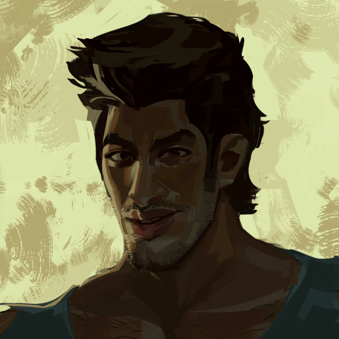
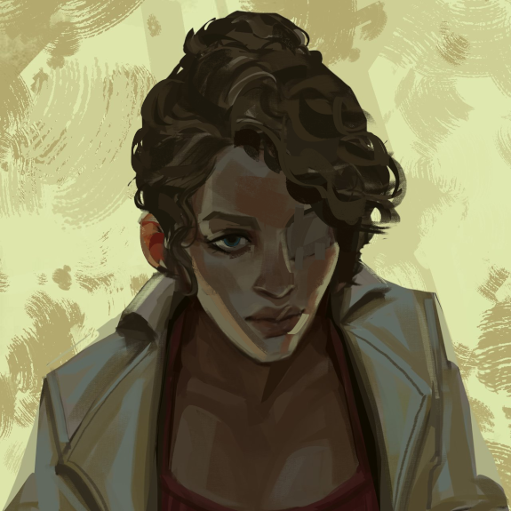
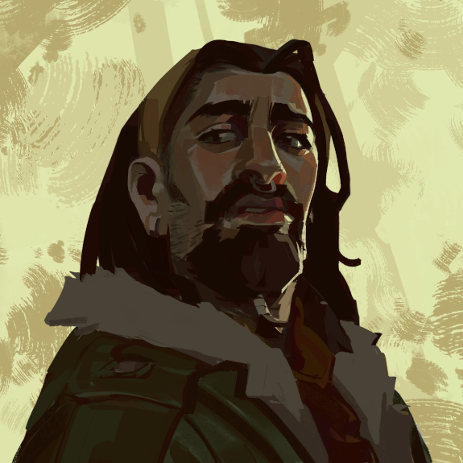
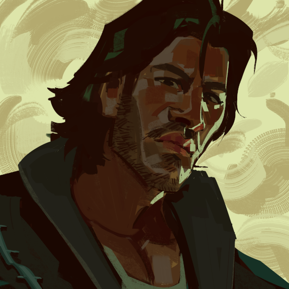
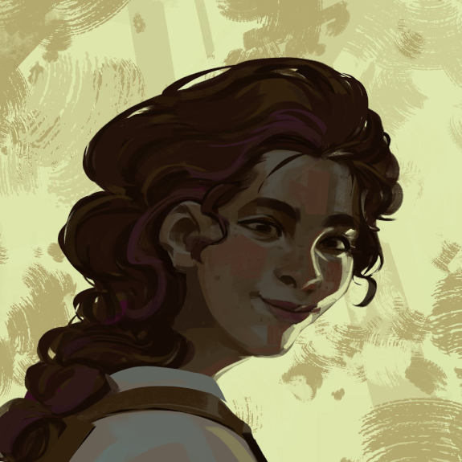

-
Carlos Rocheda
Carlos Rocheda é um jovem agricultor no Horto, conhecido por sua energia e humor. No começo, aprendeu a cultivar com seu pai para sobreviver, mas sua paixão cresceu ao ver que seu trabalho estava fazendo a diferença. Apesar sempre parecer bem, vive pensando sobre viver preso, e qual opção vale mais a pena, ficar “seguro” no Horto ou arriscar sair, movido pelo desejo de conhecer o mundo além das histórias que seus pais o contavam desde que era criança.
-
Ana
Ana é uma mulher de 36 anos. Alguns confundem sua expressão melancólica com seriedade, mas gostaria de conseguir se abrir e ter mais amizades. Assumiu seu posto em medicina, porém sente que seria melhor aproveitada como cientista, se a pequena comunidade a permitisse crescer. Acredita que a ciência um dia permitirá que eles finalmente deixem o Horto ou o transformem em um lugar melhor. Ama joaninhas.
-
Lito
Lito é criatividade pura! Divertido e amigável, versado em várias formas de arte, sempre tenta levantar o ânimo do grupo através das mais diversas formas e cores! Apesar de carregar um peso enorme e viver à sombra de seu pai, Lito busca o reconhecimento e o respeito de todos no Horto.
-
Jorge
Jorge é um dos moradores mais antigos do Horto. Apesar de ter um ar de durão em sua personalidade, seu coração é mole e ele preza pelo bem de todos. Um homem de poucas palavras, com um passado conturbado, em busca de sua esposa e filho que desapareceram em circunstâncias desconhecidas.
-
Holly Hortênsia
Holly Hortênsia tem as flores e plantas como suas melhores amigas, dedica sua vida em ajudar o Horto com seu conhecimento do poder medicinal delas. Vive a vida de um jeito leve e sempre olha pelo lado bom das coisas. Embora sinta muita falta de seus pais, ela recebe muito carinho de sua Tia Teresa, a qual ela se empenha em cuidar. Hortênsia também é muito falante, às vezes até demais... mas ela sabe equilibrar tudo isso, pois também é uma boa ouvinte.